Code First: Girls - why you should join
If you can dream it, you can do it!
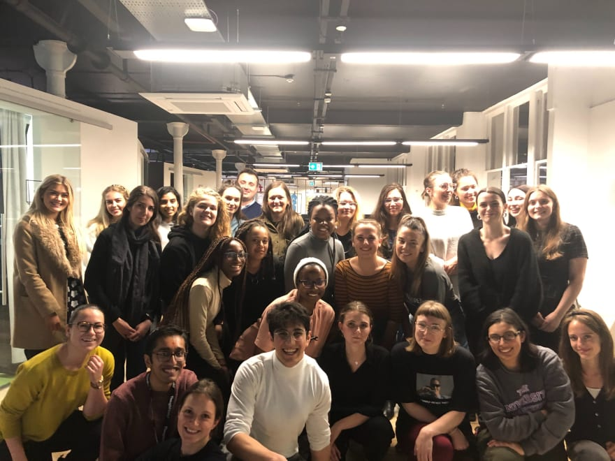i was very excited to write this post as this was a milestone i had dreamed to achieve. i had came across Code First: Girls one day like any other when reading about Pauline Narvas on Twitter and later on her blog. Because i was looking for a community to learn how to code, the rest was history. And thankfully was accepted and there was one nearby. (:
The Code First: Girls i undertook was delivered in Manchester at Thoughtworks every Tuesday from 6.30pm to 8.30pm (also a great way to break the routine i think) for 8 weeks (1 day a week) from October to November and was the Level 1 Front-End Beginners (i've been seeing there is a next one about Pyhton? 👀).
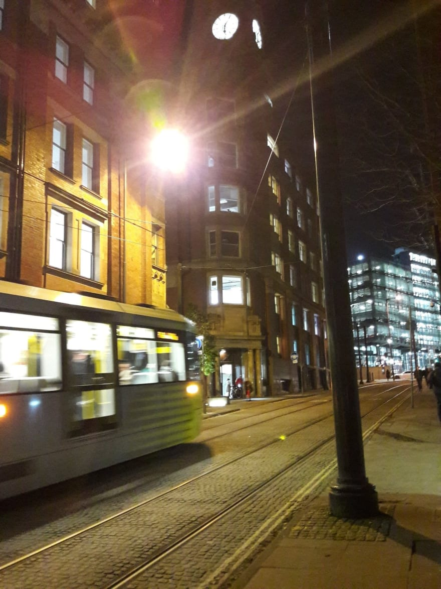First Day: Introduction to the course and HTML
Arrived on time, there was some FREE pizza and soda but i was a bit nervous so didn't take any. Also was worried about my laptop battery but it managed to work for the all time (plus there are plugs anywhere, so do not worry). The room was full when we started; around 24 girls, and 2 female and 4 male instructors.
The first session was delivered by Gabriele Sapagovaite who is a Data Scientist and comes from an Accounting background.
i had already read about how a great number of people working in tech come from unconventional backgrounds, so it was very good to hear it 'in-real-life'. Btw, there is an awesome project about this created by Pete, called No CS Degree which explore how makers and programmers have been able to succeed in learning to code with no Computer Science degree, shares very useful advice and resources for newbies. i follow them on Twitter. also a really useful newsletter.
Getting started
We did a super quick table-round presentation stating our names, what do we do and what was our favourite type of cheese.
Inês, graduated in Marketing (doesn't like sales, it's a 0 at design
and sales but loves the back-end of it like market research, competitor
analysis, SEO, optimisation and data) and doesn't really have a favourite
cheese :/
The majority of the girls were the same, came from every type of degree from Acting to Architecture, Physiotherapy, Politics, to being a teacher and just wanted to learn a new skill. So because it's something new, everyone will be nervous and you can expect a chill, informal and comfortable environment.
Because i had already worked with a bit of HTML and CSS learning from YouTube tutorials, the tasks we did were easy. But what i felt the most 'hard' thing was, was the lack, the 0 knowledge of how things actually work. The definition of a static/dynamic website, LAN/WAN networks, server/client,... some examples to start with. Did a quick research and found these books recommendation.
It was a good thing to do a bit of an 'awareness' preparation before:
•
try some HTML and CSS before,
• be comfortable with using simple
text editors (had been using Sublime; used Atom on the first session but it's
too slow on my laptop, now I'm using Visual Studio Code and so far so good)
and,
• recognise some tags and their functions. But don't worry
because prior, during and after to the Course you'll receive guiding materials
to explore and practice. So all good.
Also would add that making an 'awareness' preparation helps you to already
have some doubts you can clarify. i had my first two:
• is there a
difference between leaving a space between tags? for instance:<h1>Hello World</h1> and <h1> Hello World </h1>
A: no, it will work both ways, so spaces are superfluous.
this can also
be applied to CSS, but in this case, they aid our readability: color:red vs color: red
• how to add pages to a website.
i had made this simple webpage from this tutorial but I didn't know how to add a new page.
How could you click on the About and redirect you to another page?
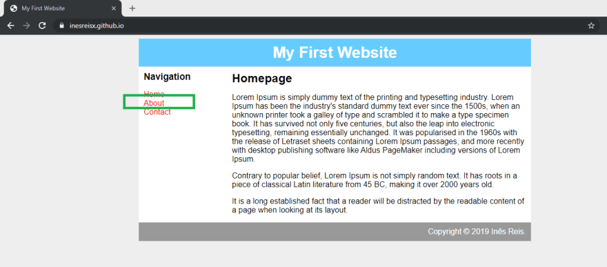
Solution: create a new file, in this case,
called about.html and add a redirection link to it in
your your index.html.
the time passed so fast! i left inspired and eager to keep learning. since day one, i kept a record of the tasks in a specific repository on GitHub, if you want to take a look at /Code-First-Girls-Beginners.
Second Day: Introduction to CSS
This time it was impossible to resist the two slices of margherita and that cup of coke (tbh i don't remember when it was the last time i had drank Coca-cola..). Full session ✔️, food ✔️, excitement ✔️.
Mehdi Varandi, a Computer
Science Student and intern, led the session. It was a code-along session and
because we would see more dynamic results, it was fun. We
ended up learning how to create a styles.css page,
connect it to index.html and discovering some cool
functions like the :hover selector.
In the end, we randomly created our group for the CFG website competition and posted it on Slack (a platform which had been totally unknown for me and that i now daily use at work).
Third Day: Recap and UX
Starting with the bad news: my computer couldn't connect to the Internet-until the end of the CFG course- (CFG's network had changed and no solution was found, it's thought it was because of me using an older version of Windows instead of 10 ), but since this was the most theoretical session of all, i was lucky for not using the computer so much.
The session about UX- User Experience, was delivered by Pritam Sangani, a graduate software developer (which was also a student and a Student Ambassador at MMU).
We first started with an exercise where we had to save a random picture taken
from the Internet into our colleague's phone. The girl next to me had an
iPhone and i own an Android, so it was perfect. It was interesting to navigate
on another interface and discover that in our case, a picture saved on her
iPhone would go to 'Photos' and on my Samsung would go
to Gallery. Overall, it was intuitive.
i think the major key learning for this session was delivered through this quote: "a great user interface doesn't mean a great user experience", in simple words, your website can look great but be a crap.
A curious thing about this day was that when leaving the session and chatting
with Rugile (team member) about the group work, we both discovered each other
were a Pauline's follower on social media and had found out about CFG also
through her when discussing how we can do this! just as
Pauline could coming from a non-CS-background. It was cool.
Fourth Day: Git and GitHub
Halfway there! Unbelievable but exciting at the same time.
In this
paragraph, i will not mention how i was feeling a bit tired from work, a bit
nauseous from my period and a bit ): because i had no Internet at all again
throughout the all session. And this time, it was needed. However, Gabriele
helped me to solve the issue from trying everything possible: network adapters, ip/config and everything more you can find here, but, it didn't work.
The good thing was: i had already made a GitHub account (since June when i first became interested in learning how to code), i had seen some YouTube videos about Git and GitHub, and i had created our group's repository. Yeap, as they say, preparation is key, i guess.
Linus Torvalds, the creator of Linux
The session was led by Alexandra Danes, software developer and Kurtis Angell, also a Northcoders graduate and developer.
Things i learned/had doubts about:
• Git
• GitHub is a
platform that holds Git.
• Each repository can have its GitHub
page.
• Push and Pull
• Conflicts
Fifth Day: Bootstrap
No Internet (used my phone's hotspot to download the files), 2 slices of pizza and a cup of pineapple and grapefruit juice (very good btw). And maybe a love-hate relationship with Bootstrap? Another code-along session with Mehdi.
i had previously tried Bootstrap at home to develop a customised WordPress theme (ok, i'm a bit curious). But, the result was a crap so i had just left it behind. This session made it definitely more clear.
Bootstrap is a framework, meaning it is made of pre-made code. And you can get it here.
Sixth Day: JavaScript and jQuery
...and on the sixth day, God created Manchester.
Two days left!
i'll miss it already. As a not-very-social-person, i struggle with finding
groups where i can feel comfortable and CFG makes it so easy to get along
with. There are no stupid questions, everyone helps each other and we're
connected by computers and of course, the love of pizza.
Dear JavaScript, i had heard some things about you such as:
- You are essential as a skill
- You are simple to be written
- You give dynamism, make things alive and everyone smile But, are you easy to be learned?
To be completely honest? This was the most confusing session of all. And i would say for all the class. We did a review of previous concepts before which took some time and ended up rushing a bit on JavaScript.
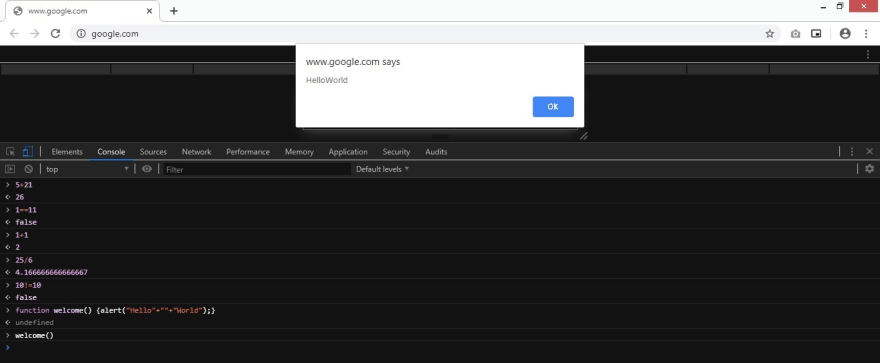We got to know and did some tests in the Chrome DevTools Console and learned how to make an alert. Still a work in progress.
Seventh Day: Revision
This session was made of a compilation of questions collected around each table from each one of us
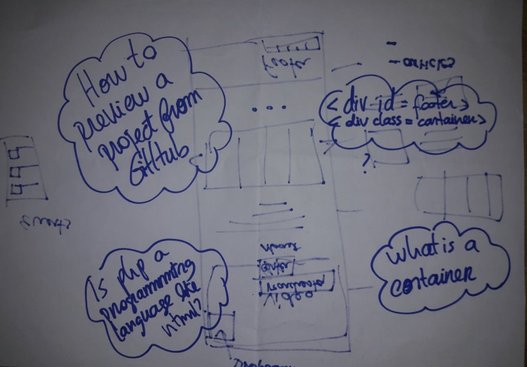(was a bit sad for knowing you cannot see GitHub projects "live" unless they have a GitHub pages or you have a link to the project?) and group work! We tried to sketch something presentable and work on them on Glitch.
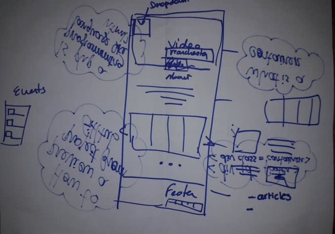FINAL DAY: Project presentation and goodbyes
It passed so quick! The session was all about everyone's projects. There were some really cool websites and ideas. The winners were Africa Travels,
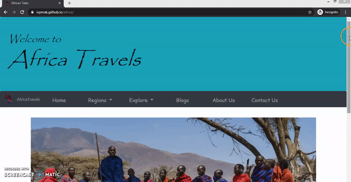with other awesome competitors like MCR Buzz
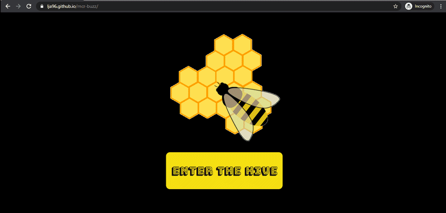(learn how to make that glow here)
and a website about Coaching with really great text effects.
Our Project: Two Thumbs Up (a random but positive team name)
About our project, we decided not to incorporate bootstrap, or use a pre-made template or code, which in my opinion was better for our learning process because we needed to understand how to make a proper structure with containers and divs (something that was making me a lot of confusion). We worked on Glitch as we could see immediate changes and work together more easily. This was our thinking process (all following images available in pdf format:
- We wanted to do a simple website about Manchester (you could look for Events, Sports, Culture, Food). And the differential would be a video playing in the background. Video was the keyword. So we cut and put together some parts of websites we liked for a first mockup.
- We later researched about drop-down menus and dynamic features we could implement. And had even managed to create a drop-down menu when clicking on the bee.
- But later, we found a really cool thing: showing page elements along your scroll like this one and wanted to try it out. But, a bit too advanced when you don't manage your time properly :/
- So we moved to another plan. Create a grid, which was challenging!
-
🤦♀️ It was missing 1fr 🤦♀️
- The result was quite nice.
And we tried to add the video once again.
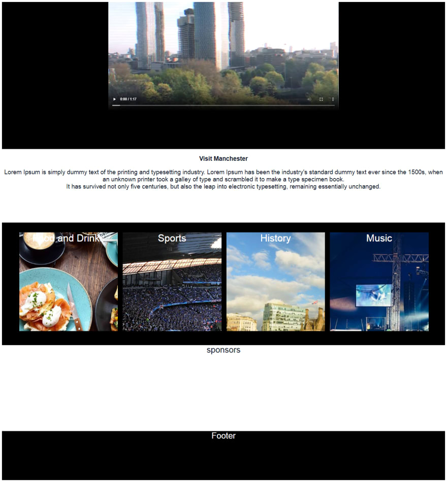And also took it all off and tried to place the drop-down menu on top of the video, which had worked for a few moments.
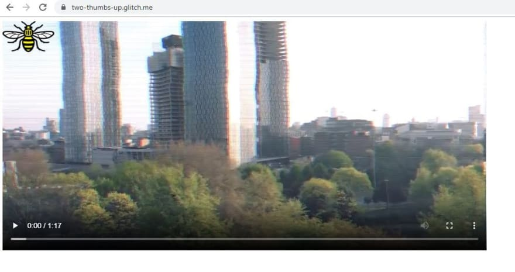But, as the deadline was approaching and our idea was vanishing away... we took another route. Which we were proud of (:
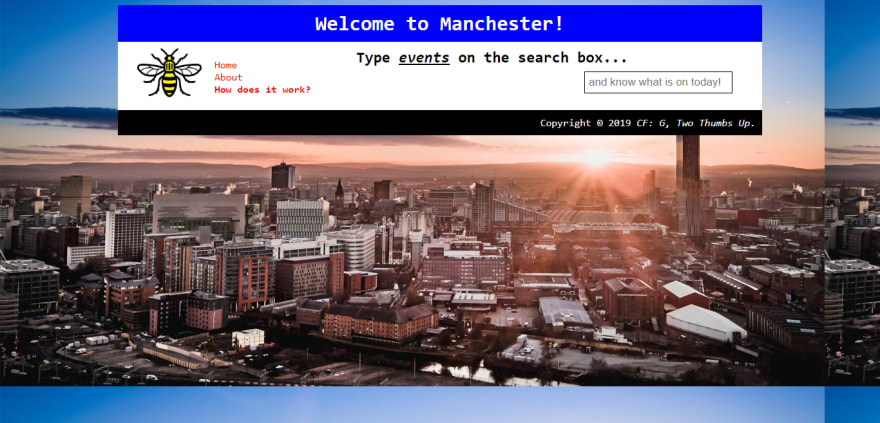💡 What about... What about if the website functions as a platform to get new recommendations about Manchester? Like every day you receive a new keyword to type into the search box and then when you press enter you are redirected to that new thing? 💡 this was our final result! can check it and try it out here.
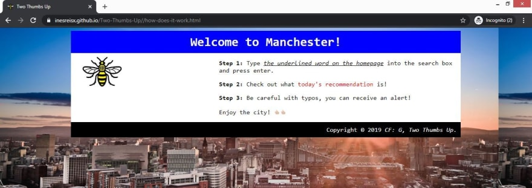(note: the project is not functional as we wanted, but will hopefully give an idea of our plan. For the presentation we wanted to set up events as the keyword to redirect to the CFG website. But all words work and redirect to the same website. Still a #wip)
In the judgement process, websites were evaluated according to formatting, organisation, different elements, visually appealing design, being a responsive, and how was the teamwork process behind it. Having the competition element definitely always adds something extra to any learning process, but overall we felt proud of the learning journey and we all left the course eager to explore more and of course, make a future upgrade to our project.
In the end, I would say Code First:Girls is a place where girls can eat pizza, get greasy fingers, clean them to their jeans and start learning how to code. Thanks for reading this far (:
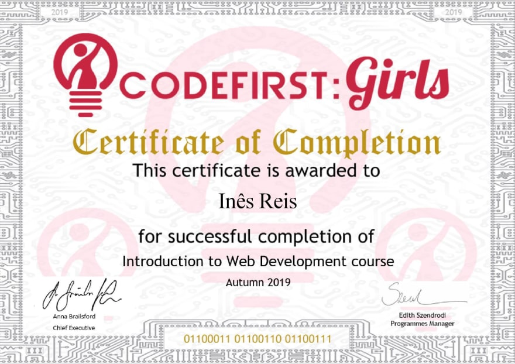Thank you Pauline for sharing it, following and for always being an inspiration ❤️